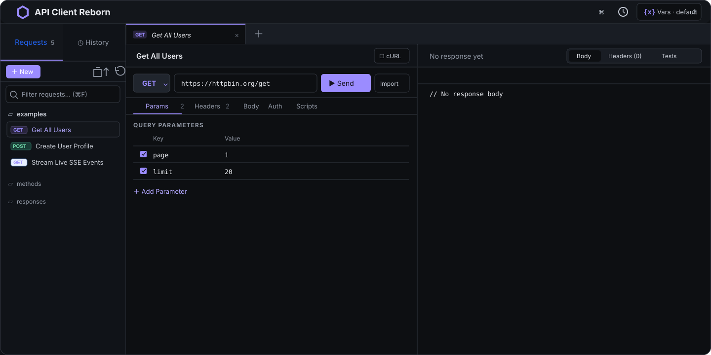

HTTP and gRPC, side by side
Build REST requests or call unary and streaming gRPC methods using reflection or local proto files.
A local-first client for HTTP and gRPC. Keep requests readable, version them with Git, and inspect streams with a bounded preview.
Free and open source · macOS, Windows, and Linux · No account required

Send requests, inspect responses, and keep your work in the same project workflow as your code.
Build REST requests or call unary and streaming gRPC methods using reflection or local proto files.
Store collections as plain files, review changes in Git, and share them through the same workflow as your code.
Inspect live events and streaming responses while response data is spooled to disk.
Connect an AI coding assistant to the built-in Model Context Protocol (MCP) server to discover, run, and save requests in your workspace.
Read the MCP Setup GuideRequests, environments, and collections live as files you can inspect, back up, and version. Navigate with keyboard shortcuts and the command palette.
See the file formatsServer-sent events, chunked HTTP, and gRPC server streams arrive incrementally. Full response data is spooled to disk while the interface keeps a bounded preview available.
Download the latest release or browse the source, report an issue, and help shape what comes next.